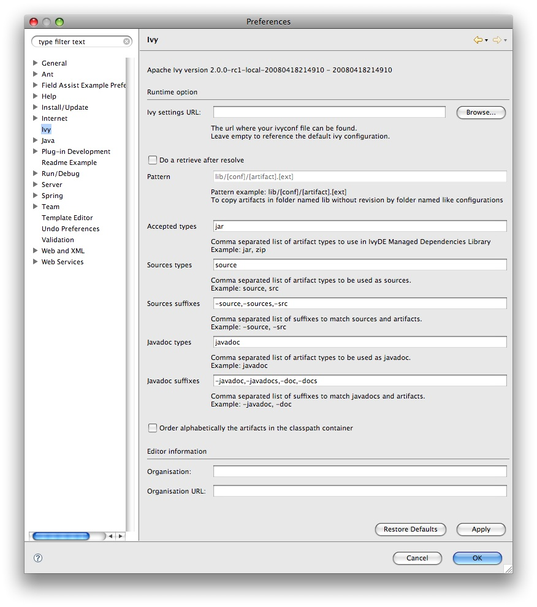
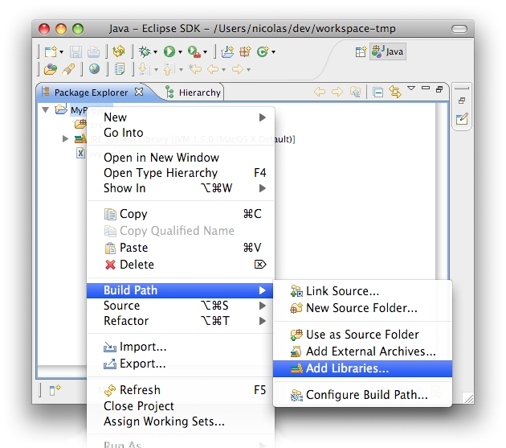
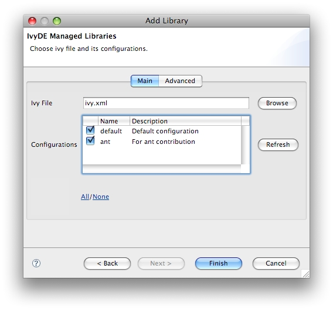
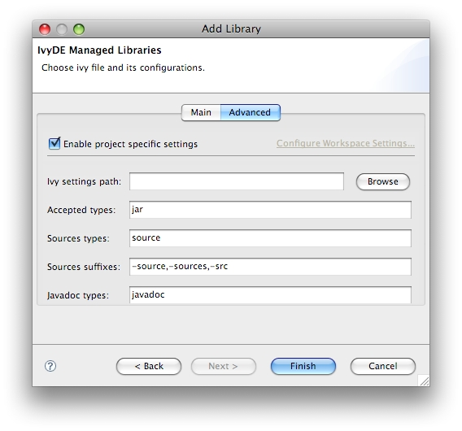
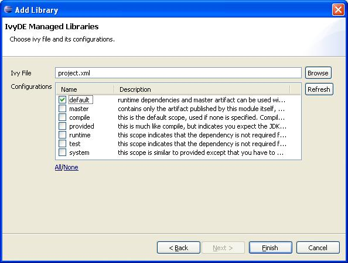
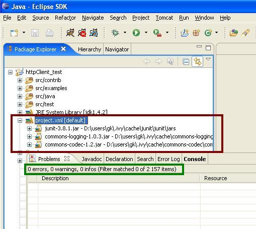

IvyDE can be considered as the merge of two tools:
- Ivy xml files Editor: creation wizard, html preview and completion for Ivy xml tag, attributes but also attributes' values.
- Class path container: Automatic downloads, access "resolve" task from your IDE
Plugin installation
Before trying to use it, let's install it!The trunk version has not been release yet, so you should install it by building it yourself.
Eclipse Preference Page
There is a global configuration page, which control the behaviour of every Ivy instance in every project. You can also configure it by project.The global configuration can be found in the global configuration panel of Eclipse (menu Window>Preferences for Windows and Linux users, Eclipse>Preferences for mac users), and select the item Ivy.

- Preference fields:
- Ivy settings URL: specify here the path to your ivy settings file. Leave it blank to use Ivy default resolvers
- Retrieve option: specify here if you want ivy to do a retrieve after the resolve.
If you check retrieve you must provide a the retrieve pattern. Check Ivy documentation for pattern explanation. - Accepted types: a comma separated list of extensions which will make IvyDE add the artifact to the classpath
- Sources types: a comma separated list of ivy "type" which will make IvyDE consider them as sources
- Sources suffixes: a comma separated list of suffixes which will make IvyDE attach as source the artifact with the suffix to the artifact without the suffix. For instance, "commons-lang-sources.jar" will be attached as source to "commons-lang.jar" with the default value.
- Javadoc types: same as sources types but for javadocs
- Javadoc suffixes: same as sources suffixes but for javadocs
- Order alphabetically: by default in the classpath container the entries are ordered by order of declaration. When there are many entries, it could be useful to have them ordered alphabetically so that you can find them faster.
- Organisation: your company name for ivy editor completion
- Organisation URL: your company web site url for ivy editor completion
Edit your ivy files easily in eclipse with the IvyDE Plugin editor.
IvyDE brings creation wizard, html preview and completion for Ivy xml tag, attributes but also for attributes' values!
Choose an organisation and browse thru its projects and revisions.
Content
Wizard
IvyDE comes with a wizard that allows you to create an ivy.xml file for your project.To open the wizard choose File->New->Other in the Eclipse menu (Ctrl+N by default)
The Ivy wizard is accessible in the category Other. Select it then click Next

The wizard contains only one page, and is very simple.

- Wizard fields:
- Container: you have to select the targeted project. (This is already set if you access the wizard thanks right click menu on your project root folder)
- File name: the ivy file name. (ivy.xml by default and its better to keep it in most of case)
- Organisation: the component owner name. (your company name or the company that provides the component if you are writing ivy.xml file for 3rd party jars). Note this value can be set in the Ivy preference page
- Module name: the component name.
- Status: the status of the project. (integration by default since we have just created its ivy file :-). Please refer to Ivy documentation for more details)
Ivy Editor

The Ivy's eclipse editor provides xml syntax coloration, tag completion, tag's attribute names completion, and for dependency and configuration tag value completion.
Completion comes with contextual help. The completion popup is displayed when hitting simultaneously the CTRL and the SPACE keys.
Available completions:
- Xml structure: allows you quickly to insert the good tag at its right place. If the tag can have nested children both notations, simple tag and open tag, are proposed

- Tag attributes: when your cursor is placed in a tag bracket the completion show available attributes for the enclosing tag.

- Attributes values: when your cursor is placed in the quote of an attribute value the completion shows available values for the matching attribute.
- Available value completion
- info: organisation (pref based), module (eclipse project name),
- info/ivyauthor: name (pref based), url (pref based)
- info/description: homepage (pref based)
- info/license: name
- info/repository: name (the other attributes depend on it), url, ivys, pattern, artifacts
- configurations/conf: visibility, deprecated, extends
- publications/artifact: type, conf, ext
- dependencies/dependency: org, name, rev are resolved thanks to Ivy using the ivyconf set in the project Ivy preference page. If not set to "default" Ivy uses its defaults resolvers configuration (ie ivyrep + ibiblio), and if not set Ivy uses the ivyconf set in the Eclipse Ivy preference page. conf values are computed from current ivy.xml file and the dependency ivy.xml file if any.

You are fed up with updating the class path of all your projects each time you add or remove one dependency! IvyDE will help you ! Better ... it will work for you!
Indeed, IvyDE can manage for you all your dependencies, based on a dependencies descriptor file (like ivy.xml file) it will provide a class path container for your IDE.
 |
Obviously IvyDE class path container can be based on a ivy.xml file, but it also manages Maven pom.xml file! |
Create the container
You've just installed the IvyDE plugin from our updatesite, and now you want to enjoy it quickly!Nothing easier, just follow these steps:
- Ensure the ivy.xml file or maven pom.xml can be accessed under the project folder of your eclipse "Navigator" view.
- Open the "Add Library" form of Eclipse (In package Explorer, in popup menu of your project choose : [Build Path]/[Add Libraries]).
 - Select "IvyDE Managed Dependencies" item.

- Select an ivy.xml file or a maven pom.xml and the desired configurations.
 - You then might want to have a special configuration for your project, a configuration different from the global one. Then select the "Advanced" panel and click on "Enable project specific settings". Every configuration entry behaves exactly is the same way as the global ones.

Your class path is set and you can see all dependencies in one unique folder of the package explorer (folder name = <ivy file name>[<configuration>]).

Edit the container configuration
Configure Ivy file and configuration
During life of your project you can change the ivy.xml file or maven pom.xml and change the configuration you wantto use.
These properties can be accessed by contextual menu of the IvyDE class path container.
You can also edit it via the build path configuration. Open the build path configuration dialog, select the "Libraries" panel and select the IvyDE classpath container. Then you will be able to click on the button "Edit": the IvyDE classpath container configuration dialog will pop up.
This is particularly useful when Eclipse hides the empty classpath containers (since Eclipse 3.3), and then this is only way to trigger a resolve.
Resolve dependencies
You can explicitly ask for a dependencies resolution from your class path container.This command will invoke the "resolve" ivy task and update your class path container.
There is also a "refresh" action: this action is similar to the resolve one, it just doesn't do a full resolve if a report already exists in the cache. This is particularly useful if you work also with ant and a command line so you won't do two full resolve.

General
If you want to use a maven pom.xml instead of ivy.xml file, you just have to select a pom file in the configuration form of IvyDE class path.
When a maven pom is selected, the configurations list is updated with all maven scopes.
Both examples below are a good illustration of maven pom use simplicity :
Maven1 Sample
This sample presents a simple use case of maven pom for IvyDE class path container. We are going to create an eclipse project on commons-httpclient sources.
- Download the commons httpclient sources
- Unzip this file (c:/tmp/commons-httpclient/)
- Create a new Eclipse java project based on the unzipped sources (c:/tmp/commons-httpclient/)

Notes: your project do not compile: some imports cannot be resolved.
- Add a new class path container based on the "project.xml" pom and select "default" configuration (maven scope)

- That's all : your project compiles !

Maven2 Sample
This sample shows that IvyDE Class path container on a Maven2 pom can handle transitive dependancies.
- Create a new empty java project in eclipse.
- In your Ivy project configuration, set the ivy settings file below (Project/Properties/Ivy):
<ivysettings>
<conf defaultResolver="ibiblio"/>
<resolvers>
<ibiblio name="ibiblio" />
</resolvers>
</ivysettings>
Using the m2compatible attribute, you can benefit from Maven2 repository compatibility.
- Add the pom below in your project and select it for an IvyDE class path container choosing "compile" and "runtime" configurations.
<project>
<modelVersion>4.0.0</modelVersion>
<groupId>com.mycompany</groupId>
<artifactId>myproject</artifactId>
<version>1.0-SNAPSHOT</version>
<dependencies>
<dependency>
<groupId>commons-httpclient</groupId>
<artifactId>commons-httpclient</artifactId>
<version>3.0</version>
</dependency>
</dependencies>
</project>
- That's all ! Your IvyDE class path container gets all dependencies even those that were transitive to the commons-httpclient module !

The Ivy console provide you all the Ivy working traces that you were used to see in your command console. This view will be really useful to understand what Ivy and IvyDE are performing for you.
The Ivy Console can be accessed within your eclipse Console view, selecting the "Ivy Console" item.

The colors in the console correspond to the different log levels. Here is the default mapping:
- Debug: light blue
- Verbose: green
- Info: black
- Warn: orange
- Error: red
This page describes how to build the IvyDE plugin from the source. The build is based on the Eclipse build system so it requires an Eclipse install. You also need to have an Ivy bundle installed.
Setup of the build
Eclipse installation
You need first an Eclipse install which contains the PDE plugins (by default included in the "SDK" and "Classic" versions). We will refer to the eclipse installation path in the documentation as $ECLIPSE_HOME. In that $ECLIPSE_HOME folder you should have the plugins and features folders. The current build have been successfully tested with:- Eclipse 3.2 under Linux
- Eclipse 3.3 under Linux, Windows and MacOS
- Eclipse 3.4M5 under Linux
The Ivy bundle
The IvyDE plugins depends on the Ivy 2.0 OSGi bundle. So the Ivy bundle have to be installed in the Eclipse installation before starting the build.You can get an officially released version of Ivy. Go to the Ivy download page and get the binary distribution. You will find in the zip the jar ivy-2.X.Y-Z.jar.
Note: due to a bug in the build script of Ivy, the OSGi version of Ivy is "0.0.0" for every version older than the 2.0.0-RC1. So a repackaging is needed. If you get the sources (which includes the build system), you can automatically install the repackaged 2.0.0-beta2 into you Eclipse install by running
ant install-ivy.
You can also build it from the sources (from subversion or from the releases). In the build/artifact folder you should then find the bundle org.apache.ivy_2.X.Y-Z.jar.
Actually every Ivy jar is an OSGi bundle. So just copy it in your Eclipse install:
cp XXXXXX.jar $ECLIPSE_HOME/plugins/org.apache.ivy_2.X.Y-Z.jar
Building
First somehow you got some sources, for instance from subversion.And go into the root folder of the sources. In that folder you should see the builder, org.apache.ivyde.eclipse and org.apache.ivyde.feature folders.
And run the build:
ant build -DbaseLocation=$ECLIPSE_HOMEThe baseLocation property is mandatory: it defines the path of your Eclipse install you want to build with. You can put this property in your local.build.properties so you don't have to specify it each time you run the build. The file local.build.properties have to be next to the build.xml.
Note that it is not recommended to have your Eclipse started when you build IvyDE. The build clean the Eclipse cache of installed plugins, so a running Eclipse might be confused.
Then in the created directory "work" you will find a directory (something like 2.0.0.alpha1-200804171513) in which you will find the zip archive ready to be unzipped in an Eclipse install.
Install
After a successful build you should have a zip file at dist/org.apache.ivyde.feature-$VERSION.zip. The zip file contains the "plugins" and "features" folders ready to be unzipped in an Eclipse install. So here is the process:cd $ECLIPSE_HOMEThen start your Eclipse and enjoy !
unzip ...../dist/org.apache.ivyde.feature-$VERSION.zip